China Social Insurance Base Changes (2026): What Global HR and EOR Buyers Must Do Next
Executive summary
- Social insurance contribution bases in China are locally administered and periodically reset, which can change both employer costs and employee net pay.
- Foreign employers often underestimate the communication and budgeting impact of base resets, especially across multi-city workforces.
- EOR success in this area depends on timing discipline, simulation quality, and clean approval trails.
- A practical control model combines base reset calendar management, pre-run simulations, employee messaging, and post-run reconciliation.
Why this topic keeps creating operational surprises
When teams talk about payroll compliance in China, attention often goes to contract terms or tax withholding, while social insurance base resets are treated as a technical back-office detail. That framing is dangerous. Base changes can alter costs quickly and trigger employee questions immediately. If your organization learns about changes after payroll is processed, trust damage happens before compliance remediation begins.
From an EOR buyer perspective, the real concern is process maturity: can your provider identify applicable local reset windows, simulate impact early, and explain changes in business language that finance, HR, and employees all understand? If not, you may stay technically “compliant enough” while still creating preventable friction.
What a strong operating process looks like
Step 1: Build and maintain a local reset calendar
Every city should have a tracked window for expected base adjustments, plus notes on local implementation behavior. Some locations issue clear timelines; others require closer monitoring of announcement channels. Your calendar should include source links, last verification timestamp, and owner responsibility.
Step 2: Run impact simulations before effective date
Simulation should not be one aggregate number. You need segmented scenarios: lower-band employees, senior staff with allowance-heavy packages, and employees likely to question net-pay changes. A segmented model helps managers explain outcomes and prevents “payroll surprise” escalations.
Step 3: Align HR communication with payroll execution
The best communication is short, specific, and pre-emptive. Tell employees what changed, why net pay may move, where to find details, and how to escalate questions. Silence until payroll day is usually the worst strategy.
Step 4: Reconcile and archive evidence
After implementation, reconcile expected vs actual contribution outputs. Keep a compliance evidence pack containing notices, simulation records, approvals, communication artifacts, and post-run QA results.
Risk scenarios that matter for global teams
Scenario A: Budgeting drift across multiple cities
If finance uses one blended assumption for social insurance costs, base resets can create variance that appears “unexpected.” This is usually a planning problem, not a legal problem. Use city-level cost models and quarterly refreshes.
Scenario B: Employee relations pressure due to net-pay decline
Even when changes are lawful, employees may interpret take-home differences as payroll error. Teams that communicate early and provide transparent explanation avoid most escalation.
Scenario C: Audit anxiety after late implementation
Late updates increase the risk of arrears correction and administrative burden. Even if penalties are limited, internal confidence drops when remediation work accumulates.
Implementation checklist for EOR clients
1. Confirm local reset source and effective date.
2. Map impacted employees by city and compensation pattern.
3. Run segmented simulations and approve assumptions.
4. Publish bilingual employee note (if appropriate).
5. Execute payroll update and perform sample checks.
6. Compare expected vs actual contributions.
7. Archive evidence pack for compliance review.
FAQ
Are contribution bases uniform nationwide?
No. Local administration means differences by city/region are common.
Can we postpone base changes to reduce complexity?
Usually not advisable. Follow local implementation guidance and timing.
Does this only affect employer cost?
No. Employee contribution amounts and net pay can change too.
Is housing fund identical to social insurance handling?
No. Housing fund typically has separate local governance and adjustment logic.
What should be included in vendor SLA for this topic?
Notice monitoring cadence, simulation lead time, communication support, and reconciliation reporting.
How often should we review controls?
At least quarterly, plus event-triggered review around known reset windows.
Disclaimer
Informational only; not legal, tax, or actuarial advice.
Sources
- MOHRSS: http://www.mohrss.gov.cn/
- State Taxation Administration: https://www.chinatax.gov.cn/
- Local social insurance service notices and implementation guidance
Need local employment support in China?
If you need a compliance-first Employer of Record (EOR) partner for hiring, payroll, and risk controls in China, China-Payroll.com can help your team evaluate the right setup.
Image Prompt Pack
Create a 16:9 hero image for article title: 'China Social Insurance Base Changes (2026): What Global HR and EOR Buyers Must Do Next'. Scene: finance and payroll operations team reviewing contribution base dashboards in a modern office. Include motifs: benefit …